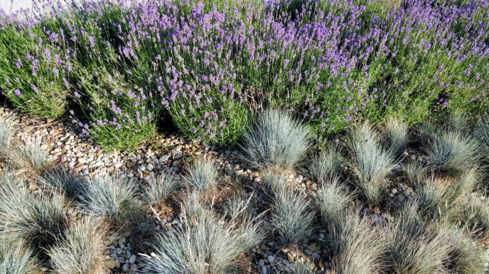
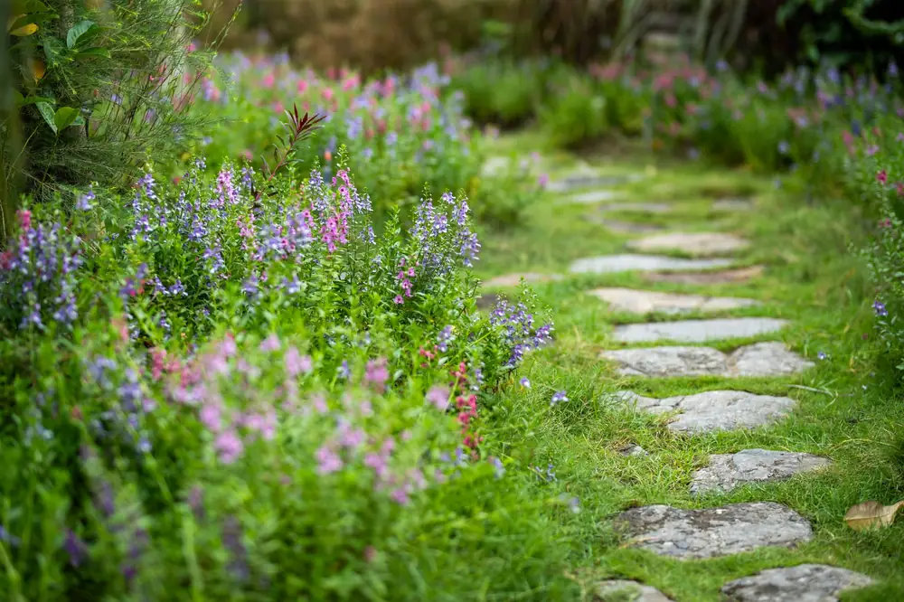
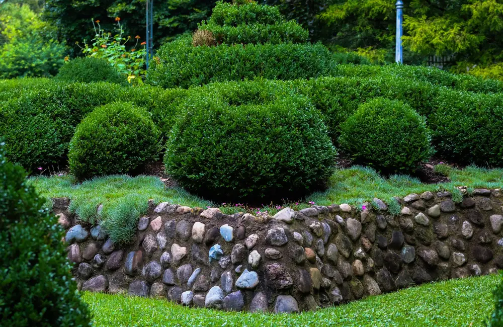

Gartengestaltung in Mainz: erst schauen, wo die Sonne steht.
Bei der Gartengestaltung in Mainz klären wir zuerst, welche Ecken mittags in der prallen Sonne liegen und welche den ganzen Tag Schatten haben. Erst dann planen wir Beete, Rasen, Wege und Licht.
Was Planung und Pflanzen kosten.
Richtwerte inkl. 19 % MwSt. Was der Plan kostet, hängt von der Größe des Gartens ab.
- Gartenplan mit Pflanzlisteauf Anfrage, je nach Größe
- Staudenbeet inkl. Pflanzen40 bis 90 € pro m²
- Rollrasen inkl. Vorbereitung15 bis 30 € pro m²
- Gartenbeleuchtungauf Anfrage, je nach Anzahl der Leuchten
Mainz bekommt wenig Regen.
Rheinhessen ist eine der niederschlagsärmsten Gegenden Deutschlands. Laut Klimasteckbrief des Landes Rheinland-Pfalz fallen in Mainz von Mai bis Oktober im Schnitt nur rund 320 Liter Regen pro Quadratmeter (1993 bis 2022). Danach richtet sich, was wir pflanzen.
Pflanzen für trockene Sommer
Wir pflanzen Stauden, Gräser und Gehölze, die Hitze und ein paar Wochen ohne Regen aushalten. Was jeden Abend Wasser braucht, setzen wir nur dorthin, wo der Schlauch gut hinkommt.
Kies nur, wo er hingehört
Kies bekommt bei uns der Traufstreifen am Haus, sonst planen wir dichte Staudenbeete und Bodendecker. Die machen nach dem Anwachsen weniger Arbeit als Schotter, und die Insekten haben auch etwas davon.
Planung auch ohne Bau
Viele Mainzer Kunden wollen einen Plan und bauen Teile selbst. Sie bekommen Zeichnung und Pflanzliste so, dass Sie damit weiterarbeiten können.
Beete, die wenig Wasser brauchen.
Dicht gepflanzte Stauden zwischen Steinen halten den Mainzer Sommer mit wenig Gießwasser aus, weil die Pflanzen den Boden beschatten.



Vom Vorgarten bis zum Plan zum Selbstbauen.
Manche wollen den ganzen Garten neu, manche nur einen Plan, mit dem sie selbst weitermachen.
- Mainz-Bretzenheim
Vorgarten neu
Kiesfläche raus, Staudenbeet mit Gräsern und ein schmaler Weg zur Haustür.
- Mainz-Laubenheim
Garten für Familien
Rasen zum Spielen, Beete am Rand, Sichtschutz aus Hecke statt Zaun.
- Mainz-Drais
Plan zum Selbstbauen
Gartenplan mit Pflanzliste, umgesetzt vom Eigentümer in zwei Etappen.
- Mainz-Gonsenheim
Abendlicht im Garten
Weg- und Baumleuchten, Kabel beim Umbau gleich mitverlegt.
Erst der Plan, dann die Pflanzen.
Nach jedem Schritt entscheiden Sie, wie es weitergeht.
- Bestand aufnehmen
Fotos, Maße und Ihre Wünsche: spielen, sitzen, ernten, wenig Pflege.
- Entwurf
Ein Plan mit Wegen, Beeten und Rasen, dazu eine Pflanzliste passend zu Sonne und Boden.
- Abstimmen
Sie gehen den Entwurf in Ruhe durch, wir ändern, was nicht passt.
- Umsetzen
Selbst, mit uns oder in Etappen, gepflanzt im Frühjahr oder Herbst.
Fragen zu Plan und Pflanzen.
Was kostet eine Gartenplanung in Mainz?
Das hängt von Größe und Umfang ab, deshalb nennen wir den Preis nach einem kurzen Blick auf Fotos und Maße. Die Planung können Sie auch separat beauftragen und den Garten später selbst oder in Abschnitten umsetzen. Mit dem Gartenplaner auf der Startseite sehen Sie vorab eine Größenordnung für Material und Arbeit.
Welche Pflanzen eignen sich für Mainzer Gärten?
Pflanzen, die Hitze und trockene Phasen vertragen: viele Stauden aus offenen, sonnigen Lebensräumen, Ziergräser und robuste Gehölze. Bewährt haben sich zum Beispiel Lavendel, Katzenminze, Steppensalbei, Fetthenne und Lampenputzergras. Welche genau, hängt von Sonne, Boden und Ihrem Pflegewunsch ab. Wir stellen die Liste so zusammen, dass vom Frühjahr bis in den Herbst etwas blüht.
Ist ein Schottergarten pflegeleichter?
Meist nur im ersten Jahr. Danach wächst Unkraut zwischen den Steinen, und die Fläche heizt sich im Sommer stark auf. Ein dicht gepflanztes Staudenbeet braucht nach dem Anwachsen oft weniger Arbeit. Außerdem verlangt die Landesbauordnung Rheinland-Pfalz in § 10 Abs. 4 seit Dezember 2022, dass nicht überbaute Flächen bebauter Grundstücke begrünt werden, soweit sie nicht anders gebraucht werden. Was für Ihr Grundstück gilt, klären wir vor der Planung.
Kann ich die Gartengestaltung von der Steuer absetzen?
Den Arbeitsanteil oft ja: Nach § 35a Abs. 3 EStG mindern 20 Prozent der Arbeits-, Fahrt- und Maschinenkosten die Einkommensteuer, höchstens 1.200 Euro pro Haushalt und Jahr, wenn Sie den Rechnungsbetrag überweisen. Die Pflanzen selbst zählen als Material und damit nicht. Wir weisen beides auf der Rechnung getrennt aus.
Wann ist die beste Pflanzzeit?
Für die meisten Stauden und Gehölze das Frühjahr oder der Herbst. Im Herbst ist der Boden noch warm, und es regnet mehr. So wurzeln die Pflanzen vor dem Winter ein und brauchen im ersten Sommer weniger Wasser. Rollrasen verlegen wir bei mildem, feuchtem Wetter. Mit der Planung fangen Sie am besten einige Monate vorher an.
Weitere Leistungen und Orte
Wo steht bei Ihnen nachmittags die Sonne?
Erzählen Sie uns, wie Sie Ihren Garten nutzen wollen. Ein paar Fotos aus verschiedenen Ecken reichen für den Anfang.